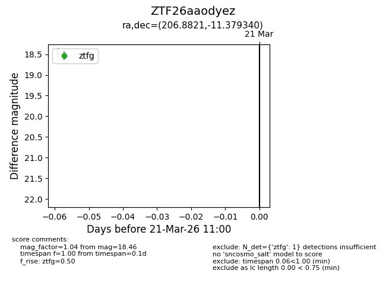
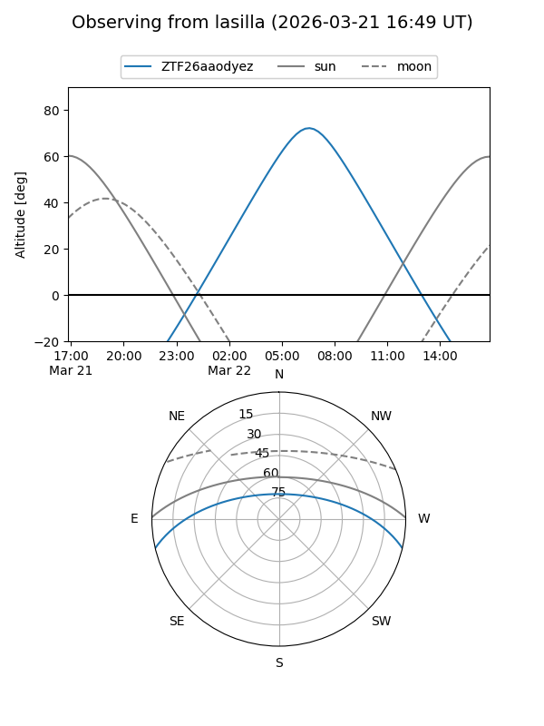
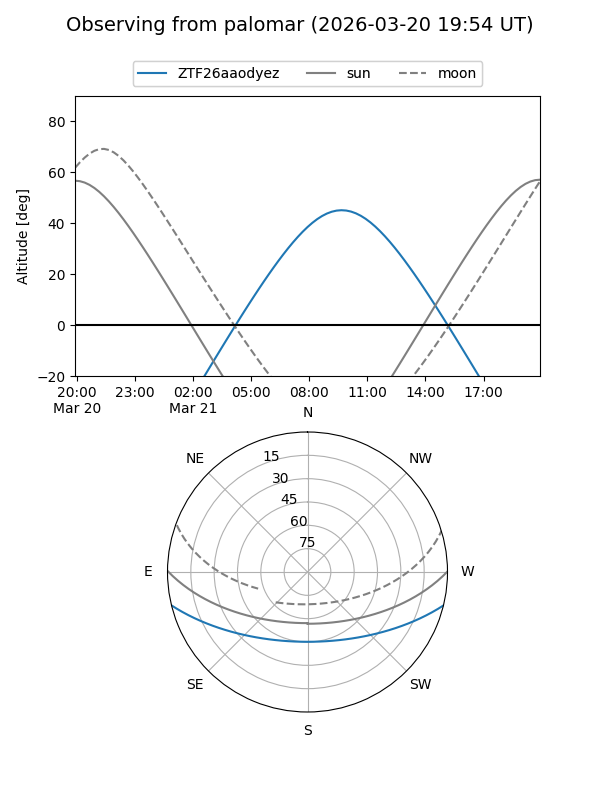

ZTF26aaodyez
Target ZTF26aaodyez at 2026-03-21 11:02
Aliases and brokers:
FINK: link
Lasair: link
ALeRCE: link
alt names
ZTF26aaodyez (ztf,fink_ztf)
Coordinates:
equatorial (ra, dec) = 206.8821,-11.37934
equatorial (HMS+DMS) = 13:47:31.70,-11:22:45.62
galactic (l, b) = (324.2308,+49.15885)
Flags:
Photometry:
last ztfg=18.46
1 ztfg detections
Lightcurve

Visibility


Additional plots